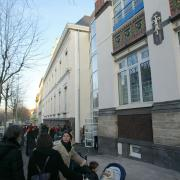
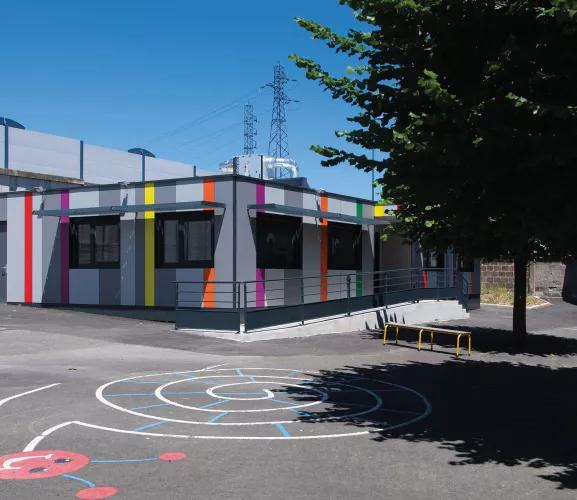

Du 19 février 2024 au 31 février 2024 et du 22 avril 2024 au 26 avril 2024, j'ai effectué un stage pour l'obtention de mon BAFA en tant qu'animateur pour les élémentaires (6-11) et les maternelles (3-5). Là-bas, j'ai eu ma première expèrience professionnelle intégré dans une équipe. J'ai du apprendre le sens des responsabilités avec des activités où je devais quelques fois m'occuper seul des enfants. J'ai participé pour la première fois à des réunions avec une équipe.

Du 28 avril au 2 mai 2025, j'ai été animateur à l'école de Chanteranne pour les élémentaires (6-11), et lors du mois d'août 2026, j'ai été animateur au centre de Theix. Là-bas, j'ai dû m'occuper du bien-être physique et mental des enfants et, organiser des activités adaptés à leur tranche d'âge J'ai aussi dû travailler avec l'équipe d'animation pour organiser des sorties et des grandes activités et nous avons dû participer chaque soir à des réunions. Elles ont eu pour but de planifier les activités ainsi que le déroulé des journées et, de répartir à chacun les tâches lors de grandes activités. J'ai aussi là-bas appris le sens des responsabilités lorsque, par exemple, j'emmenais seul un groupe d'enfants en sorties, loin du centre. Je devais faire attention à ce qu'ils soient bien tous groupés, présents, ne dérangent personne et qu'on arrive à l'heure aux endroits où nous étions attendus. J'y ai aussi appris beaucoup de compétences pratiques pour réaliser des activités aux enfants comme le bricolage, ou encore la couture.